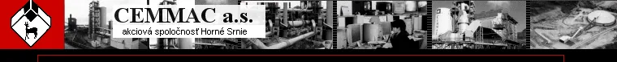

Portlandský troskový cement STN EN 197-1 CEM II/A-S 32,5 R
Portlandský troskový cement CEM II/A-S 32,5 R sa vyrába spoločným zomletím kremičitanového (portlandského) slinku, vysokopecnej granulovanej trosky a sádrovca. Troska, ktorú cement obsahuje max. do 20 % upravuje zmesnosť cementu a tiež obmedzuje prílišné počiatočné hydratačné teplo. Sádrovec pôsobí ako regulátor tuhnutia cementu.
| Parametre | Norma | Dosahované hodnoty | Merná jednotka | |
|---|---|---|---|---|
| Pevnosť v tlaku | 2 dni | min. 10,0 | 20,0 | N/mm2 |
| 28 dni | min. 32,5 | 44,2 | N/mm2 | |
| max. 52,5 | ||||
| Počiatok tuhnutia | min. 60,0 | 169 | minúta | |
| Obsah trosky | min. 6,0 | 16,8 | % | |
| max. 20,0 | ||||
| Objemová stálosť podľa Le Chateliera | max. 10,0 | 0,9 | mm | |
Portlandský troskový cement CEM II/A-S 32,5 R sa používa k príprave mált, jednoduchého a vystuženého betónu, takmer pre všetky druhy občianskych a priemyselných stavieb, výrobe železobetónových stavebných dielcov, betónových výrobkov, terasových dlaždíc, nadstavbových omietok, cementovej malty. Je vhodný na spracovanie v prostredí do 5°C. Pod teplotou 5°C je ho možné spracovať za použitia špeciálnych prísad.
Cement tohto druhu má veľmi dobrú objemovú stálosť a je odolný voči chemickým vplyvom.
- vo vreciach o hmotnosti 50 kg a 25 kg (železnica)
- paletovaný - 1,5 t (nákladná doprava, železnica)
- paletovaný s fóliou
- paleta EUR
- hmotnosť cementu na 1 palete - 1,5 t
- voľnoložený (autocisterny, železnica - vagóny RA
Portlandský cement STN EN 197-1 CEM I 42,5 R
Portlandský cement CEM I 42,5 R sa vyrába jemným zomletím kremičitanového (portlandského) slinku s malým množstvom sádrovca ako regulátora tuhnutia. Dosahuje vysoké pevnosti a je vyrábaný bez prísady vysokopecnej granulovanej trosky. Sádrovec pôsobí ako regulátor tuhnutia cementu.
| Parametre | Norma | Dosahované hodnoty | Merná jednotka | |
|---|---|---|---|---|
| Pevnosť v tlaku | 2 dni | min. 20,0 | 28,6 | N/mm2 |
| 28 dni | min. 42,5 | 53,7 | N/mm2 | |
| max. 52,5 | ||||
| Počiatok tuhnutia | min. 60,0 | 149 | minúta | |
| Objemová stálosť podľa Le Chateliera | max. 10,0 | 0,5 | mm | |
Portlandský troskový cement CEM I 42,5 R má vyššie počiatočné pevnosti ako portlandský troskový cement. Používa sa k príprave betónov vysokých pevnostných tried, pre náročné konštrukcie zo železobetónu a predpätého betónu, pre všetky druhy občianskych a priemyselných stavieb. Ďalej ho možno použiť na špeciálne zálievky stykov a železobetónových montovaných konštrukcií. Je vhodný na spracovanie v prostredí do 5°C. Pod teplotou 5°C je ho možné spracovať za použitia špeciálnych prísad.
Cement tohto druhu má rýchly nárast počiatočných pevností a vykazuje veľmi dobrú spracovateľnosť.
Spôsob dodania
- vo vreciach o hmotnosti 50 kg a 25 kg (železnica)
- paletovaný - 1,5 t (nákladná doprava, železnica)
- paletovaný s fóliou
- paleta EUR
- hmotnosť cementu na 1 palete - 1,5 t
- voľnoložený (autocisterny, železnica - vagóny RAJ)

Použitie cementov a spotreba stavebných materiálov do mált
MALTY - spotreba stavebnej hmoty na 1 m3
| Názov malty (omietky) | Brizolit | Piesok m3 | Cement kg | Vápno kg | Hrúbka mm | Použitie |
|---|---|---|---|---|---|---|
| Štuková | 1,34 | 67 | 194 | 15 | Obytné miestnosti | |
| Štuková na rákos | 1,20 | 100 | 190 | 20 | Obytné miestnosti - spojenie dreva a omietky | |
| Štuková na keramid | 1,20 | 113 | 190 | 20 | Stropy, povlaky, opásanie OK, trámy | |
| Vápenná hrubá | 1,20 | 20 | 175 | 15 | Základná, podkladová vrstva | |
| Vápenná hladká | 1,20 | 40 | 190 | 15 | Vrchná pohľadová vrstva | |
| Cementová | 1,60 | 280-400 | 20 | 15 | Pod zvislé izolácie | |
| Cementová pálená | 1,00 | 550 | 30 | 20 | Ukončujúca vrstva pod obklady | |
| Brizolitová | 1,70 | 0,30 | 110 | 160 | 25 | Povrchové úpravy pasád |
Poznámka: spotreba celkom + 15%, bez záruky, pridanie vody -podľa konzistencie, použitie cementu, tr.CEM II/A-S 32,5
Použitie cementov a spotreba stavebných materiálov do betónov
BETÓNY - spotreba stavebnej hmoty na 1 m3
| Druh cementu | Trieda betónu | Kamenivo kg | Cement kg | Voda l | Použitie |
|---|---|---|---|---|---|
| CEM II/A-S 32,5 R | B-7,5 (105) | 2000 | 170 | 165 | Základy |
| B-10 (135) | 1980 | 250 | 175 | Vence, podkl. betóny | |
| B-12,5 (170) | 1950 | 290 | 185 | Preklady, Ž.B. | |
| B-15 (175) | 1900 | 310 | 190 | Tyčové prvky | |
| B-20 (250) | 1900 | 350 | 200 | Stropy | |
| B-25 (330) | 1800 | 400 | 205 | Viac namáhané konštr. | |
| CEM I 42,5 R | B-15 (175) | 1750 | 220 | 160 | Armované nosné prvky |
| B-20 (250) | 1700 | 255 | 165 | Stropy, piliere, prefabr. | |
| B-25 (330) | 1650 | 305 | 170 | Veľmi namáhané prvky | |
| B-35 (400) | 1600 | 440 | 180 | Predpäté konštrukcie |
Poznámka : špeciálne betóny - podľa zvláštnych receptúr, bez záruky, všetky betónové zmesi vyrábané na betonárkach podliehajú certifikácií a ich recepty musia byť schválené skušobným ústavom (TSÚS Bratislava)
Pevnostné triedy betónov
| staré normy | súčasné normy | európske normy | |||||
|---|---|---|---|---|---|---|---|
| ČSN 732001 | ČSN 731201 | STN 73 2400 | STN P ENV 206 | ||||
| trieda | trieda | trieda | zaručená pevnosť Rbg (MPa) | kontrolná pevnosť Rbcn (MPa) | trieda | fck,cyl 1) (MPa) | fck,cube (MPa) |
| B 5 | 5 | 7,5 | |||||
| B 105 | 0 | B 7,5 | 7,5 | 10,5 | |||
| B 135 | I | B 10 | 10 | 13,5 | |||
| (B 170) | II | B 12,5 | 12,5 | 16,5 | |||
| B 170 | II | B 15 | 15 | 19,5 | C 12/15 | 12 | 15 |
| B 250 | III | B 20 | 20 | 25 | C 16/20 | 16 | 20 |
| (B 330) | IV | B 25 | 25 | 30 | C 20/25 | 20 | 25 |
| B 330 | IV | B 30 | 30 | 35 | C 25/30 | 25 | 30 |
| B 400 | B 35 | 35 | 40 | C 30/37 | 30 | 37 | |
| V | B 40 | 40 | 45 | ||||
| B 500 | B 45 | 45 | 50 | C 35/45 | 35 | 45 | |
| VI | B 50 | 50 | 55 | C 40/57 | 40 | 50 | |
| B 600 | B 55 | 55 | 60 | C 45/55 | 45 | 55 | |
| B 60 | 60 | 65 | C 50/60 | ||||